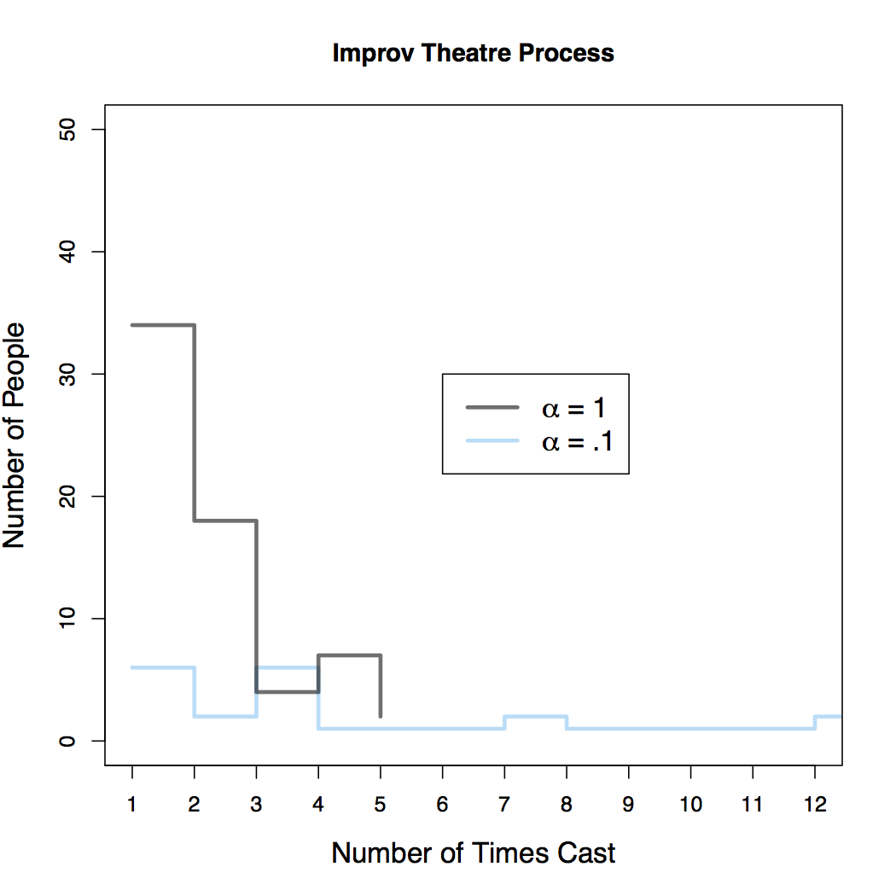
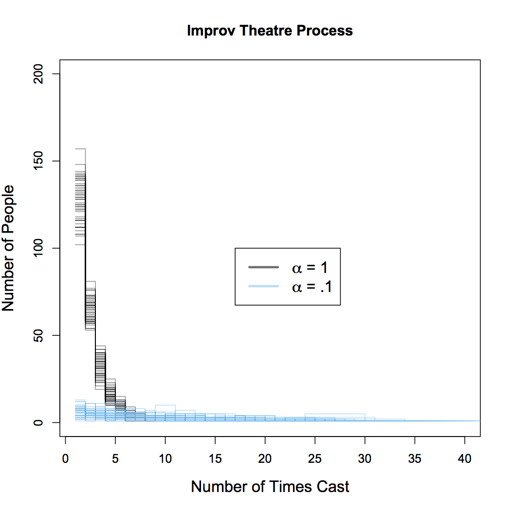
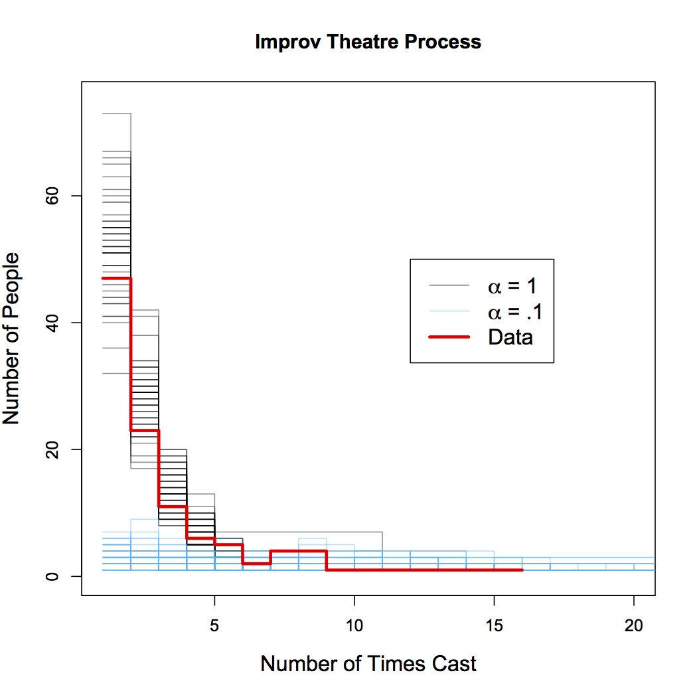

The Improv Theatre Process
Here I describe, for no reason at all, the Improv Theatre Process: a random process which is a variation on the Chinese Restaurant Process. Suppose we operate an improv theater, for which we regularly hold auditions in order to cast mainstage shows. For each show, we will cast \( S \) actors, where \(S\) is probably 10 to 12. Imagine we have an infinite pool of potential actors to choose from. For each show, we want to choose a cast that both utilizes previous experience of certain actors while also providing a mechanism to bring new actors into the community who have no experience yet. The following scheme allows us to balance these concerns. For the first show of the year, suppose that no actors have any experience, so we simply choose \(S\) actors uniformly at random (all actors are equally talented in our town). For all subsequent auditions, we choose new actors and reward experienced actors in the following way. Choose a number, \(\alpha\), which will quantify our propensity to choose inexperienced actors. For each slot we have to fill (up to \(S\)), we pick a an inexperienced actor with probability \[ \frac{\alpha}{1+\alpha} \] and choose an experienced actor with probability \[ \frac{1}{1+\alpha}. \] The propensity to choose experienced vs. rookie actors is fixed during the casting of a single show. It does not change as a cast assembled. When we choose an experienced actor, we select the \(k_{th}\) actor with probability proportional to the number of shows they've already been in, \(n_k\). That is, we pick any of our \(K\) experienced actors with probability \[ \frac{n_k}{\sum_{i=1}^K n_i +\alpha}. \] What is the result of this process? Suppose in the course of a year, our theater puts on 12 shows and therefore each of 12 audition results in a cast of 10 actors. After the course of a year, what is the distribution of number of times any given actor has been cast? Some actors might get cast a lot (because they've been cast previously) and some might get cast once or twice, and the rest of our infinite pool will get cast zero times. Plotted below in the figure below are the distributions from a sample from the Improv Theatre Process (ITP) for two values of \(\alpha\).
When \(\alpha\) is higher, it means we are more interested in recruiting from inexperienced people. The gray trace in the figure corresponds to a draw from the ITP with \(\alpha=1\). Notice that most people (of the people who got cast at all) were cast in just one or two shows and there's only a few people who get cast in 4 or 5 shows, and no one that gets cast in all 12 shows. When \(\alpha\) is low, we are less likely to recruit actors without prior experience and instead tend draw repeatedly from the same pool (the pool of actors who were cast in the first show, as it happens). The blue trace corresponds to a draw with \(\alpha=.1\) and we see that a relatively smaller proportion of all casted actors are in just one or two shows - the people who were in previous shows tend to be reused. The distribution is relatively flat all the way out to 12, so it's fairly likely that any given actor will get cast repeatedly, once they have experience. In fact, in this particular draw, there are two actors who are cast in all 12 shows. So with a low value of \(\alpha\), there can still be many of people who get cast in 1 or 2 shows, but there can also be a small number of people who get cast in a large number of shows (this is referred to as a distribution having a heavy tail).
The above figure plots the resulting distributions from a single sample from the ITP (well really two, one for each value of \(\alpha\) that is shown). Any particular draw is subject to randomness and so it will be helpful to do many repeated draws to understand the full range of possibilities. The second figure (below) overlays the distributions of 50 separate draws from the ITP. Since the lines tend to bunch up, it is difficult to plot these for small values of \(S\). For this figure, \(S\) is increased to 50, which might correspond to several consecutive years of auditions.
With these repetitions, we see the same basic effect but also get a sense of the range of all possible outcomes for each \(\alpha\). For large \(\alpha\), the majority of all actors tend to be cast in 5 or fewer shows. For lower values of \(\alpha\), this distribution is more disperse. Again, it is still most likely for any particular actor to be cast in just a few shows, but now the distribution is spread out to the right. It is not uncommon for some actors to be in many shows: there is even a draw with an actor who was in over 40 out of 50 shows. This heavy tail results from the fact that we reward actors with prior experience by making it increasingly likely that we choose them. But again, we can use \(\alpha\) to fine-tune this process if we want to cast more new actors and not more of the same.
So is this model any good? I have the results of the last 20 auditions from the Hideout Theatre in Austin, TX. The third figure (similar to the second figure) shows 50 draws from the ITP for \(S=20\) and for two values of \(\alpha\) (in gray and blue). The thick red trace shows the actual distribution of the number of times each actor was cast in Hideout shows. Remarkably, the data is very similar to the samples from the model for \(\alpha=1\). This means two things: this simple model of randomly choosing actors does a great job of explaining the distributions seen in the real world. Second, the best fits to the data tend to come from samples where \(\alpha \approx 1\). So to the extent to which this model process is an accurate representation of the true underlying process, we can say that \(\alpha=1\) is a good estimate of the true parameter.
